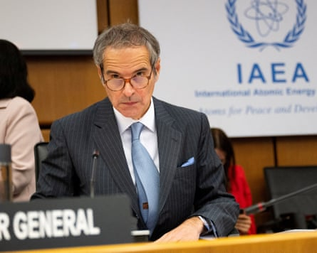

Trust in the UN nuclear inspectorate is broken inside Iran, the country’s president, Masoud Pezeshkian, has told Emmanuel Macron , as European nations issued a statement in defence of its head.
The two men spoke as Iranian officials said the total number of Iranian deaths during the 12-day air war with Israel and the US had risen to 935 people, including 38 children and 132 women.
Pezeshkian criticised Rafael Grossi, the International Atomic Energy Agency (IAEA) director general, in the call, according to an Iranian account, saying he had not condemned the Israeli and US attacks even though they had been in flagrant breach of the UN charter and the nuclear non-proliferation treaty (NPT). His language was more constrained than others in Iran, where the conservative newspaper Kayhan said if Grossi came to the country he should be put on trial and sentenced to death for links to the Israeli spy agency the Mossad.
The IAEA director general, Rafael Grossi. France, Germany and the UK condemned Iran’s threats against him.Photograph: Elisabeth Mandl/Reuters
A joint statement on Monday from the UK, France and Germany said they condemned threats against Grossi “and reiterate our full support to the agency and [Grossi] in carrying out their mandate”, calling on Iran to cooperate with it.
“We call on Iranian authorities to refrain from any steps to cease cooperation with the IAEA. We urge Iran to immediately resume full cooperation in line with its legally binding obligations, and to take all necessary steps to ensure the safety and security of IAEA personnel,” it said.
But the sense in Iran of western double standards is fuelling a deep feeling of grievance, as well as a refusal to give the IAEA access to make an independent assessment of the damage to Iran’s nuclear sites, leaving such assessments to highly politicised reports emerging from the US.
According to the Iranian account of the Sunday evening call, Pezeshkian told the French president: “What guarantee is there that our facilities won’t be attacked again, even if we cooperate?” He also questioned why Israel, which is not a member of the NPT, had been allowed to become a source of evidence for IAEA reports.
Despite persistent reports that Iran and the US are using back channels to set up further indirect talks under the mediation of Oman, Iran’s deputy foreign minister, Majid Takht-Ravanchi, said no such dates or times had been agreed.
A compromise being floated by the US special envoy Steve Witkoff suggests that Iran be entitled to enrich uranium, a key Iranian demand, but in a consortium on the Iranian island of Kish under severe constraints.
Speaking at a seminar hosted by the UK defence thinktank the Royal United Services Institute, Nicholas Hopton, a former UK ambassador to Iran, said huge damage had been done to the Iranian regime, but questioned whether any of Israel’s key objectives had been met including regime change. He said: “There was little evidence that Iran was rushing to a bomb three weeks ago and apparently now 400 kilos of highly enriched uranium are unaccounted for.
“It will be a long time before the IAEA can comment authoritatively on the extent to which Iran’s nuclear programme has even degraded.”
Ali Ansari, a professor of Iranian history at St Andrews University, said: “There is a lot of shouting about nationalist solidarity that may subside as the dust settles. The official narrative that Iran has scored a major triumph against Israel is a classic case of when George Orwell talks about nationalism and indifference to reality.”
He claimed that in reality serious discussions were going on within the state about what went wrong, its air defences, the lack of civil defence and the shocking and profound levels of infiltration of the security forces. “People are saying the one thing we thought the Islamic Republic can do is defend us and they cannot even do that. The Islamic Republic that went into this conflict will not be the Islamic Republic that comes out,” he said.